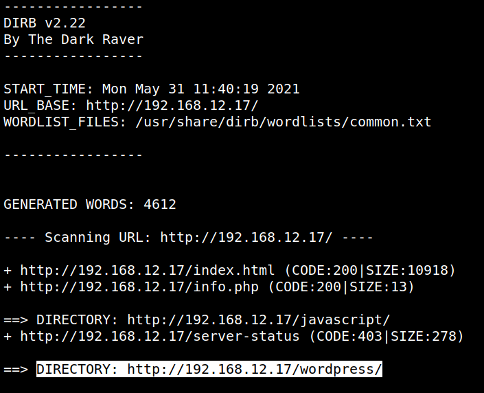
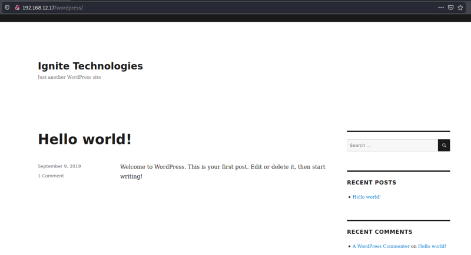
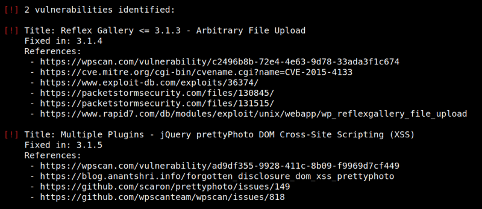

3. Enumerate
If you visit the 192.168.12.17 URL you got nothing interesting.
a) Enumerate information about the directories.
$dirb http://192.168.12.17
Output:

This gave us a directory called “wordpress”.
b) Let's open the URL.

c) Let's run “wpscan”.
$wpscan --url http://192.168.12.17/wordpress --enumerate p --api-token <your token from www.wpscan.com/profile>
Output:

We got at first, two vulnerabilities.
• Reflex Gallery <= 3.1.3 - Arbitrary File Upload.
• Multiple Plugins - jQuery prettyPhoto DOM Cross-Site Scripting (XSS).